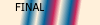
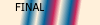
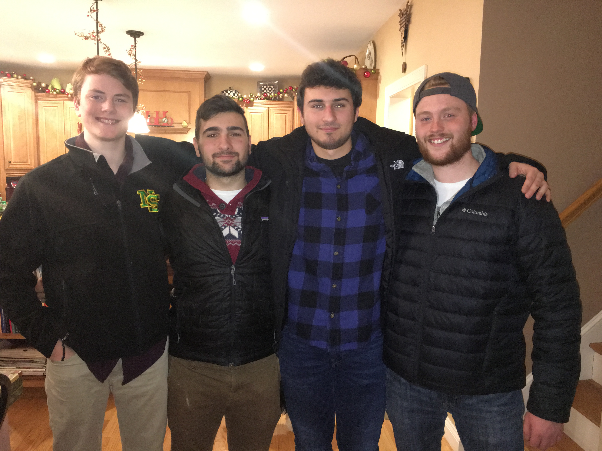
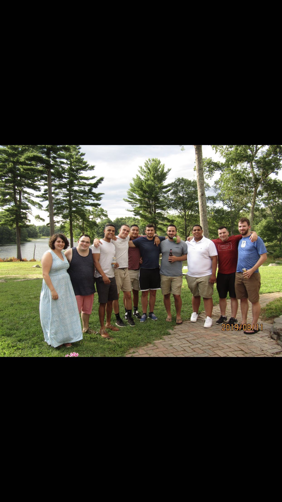
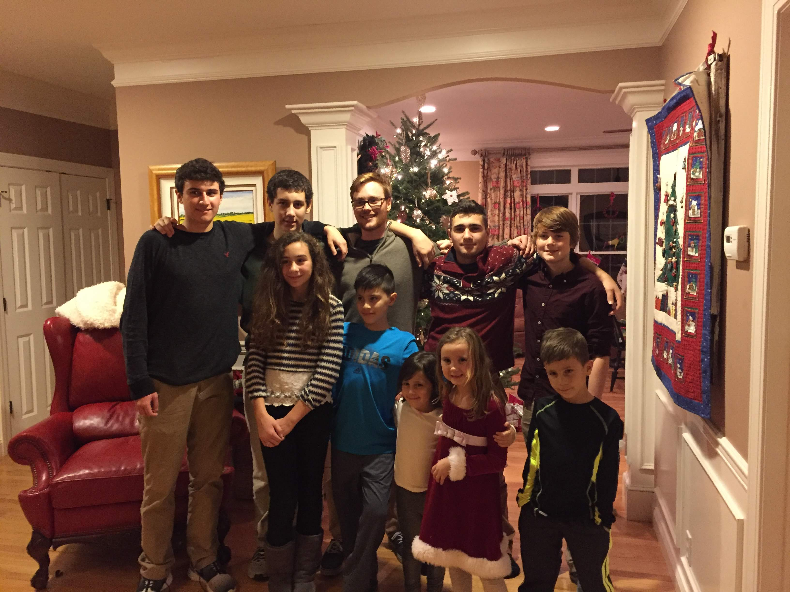
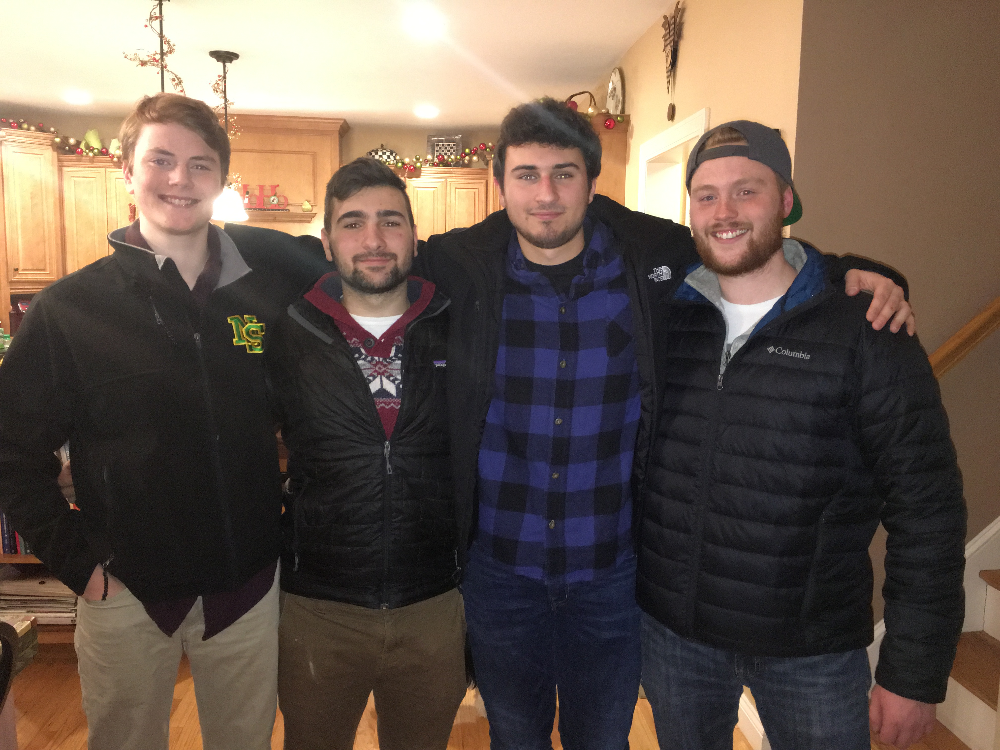
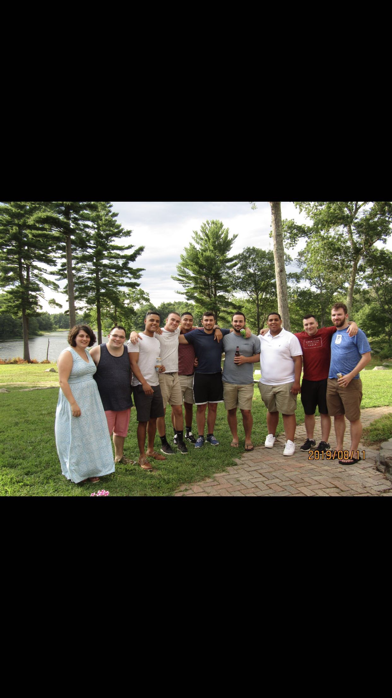
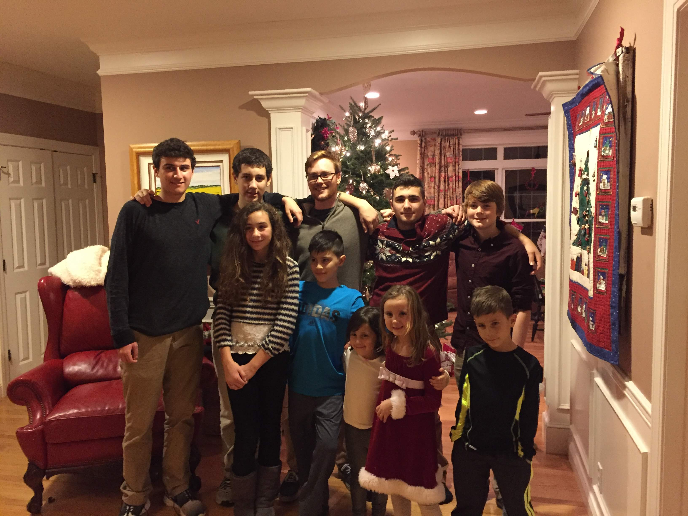

My name is Kyle Stearns I am currently a senior about to graduate at the University of Rhode Island.
I was born in West Warwick and currently live in Richmond, I live at home still.
I currently intern as a social worker at the ACI in Cranston talking to inmates in medium security, the internship brings many surprises and I am heavily interested in it. I like to spend my free time lifting weights and with family/friends, I also look up a lot of information of sports, future career possibilities, and strive to better myself as a person.
 




